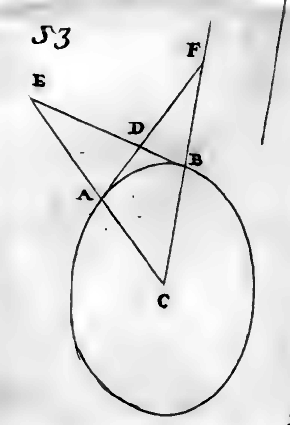
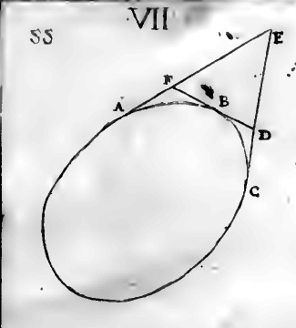
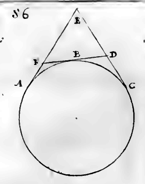

Proposition XIV: Concurrency on Three Tangents to a Circle or Ellipse¶







Proposition XIV · Theorem XII (pp. 49–51, Tab. 6, Figs. 53–54 & Tab. 7, Figs. 55–56)
Extending the three-tangent concurrency of Proposition I to external/exscribed configurations where a circle or ellipse is tangent to one side of a triangle and the extensions of the other two sides (the excircle / ex-ellipse configuration), Ceva proves that the three lines joining vertices to opposite tangency points still concur at one point (yielding the **Nagel point* X8 and its conic generalizations), followed by a general Corollary on p. 51.*
f. 0067 · p. 50 f. 0068 · p. 51